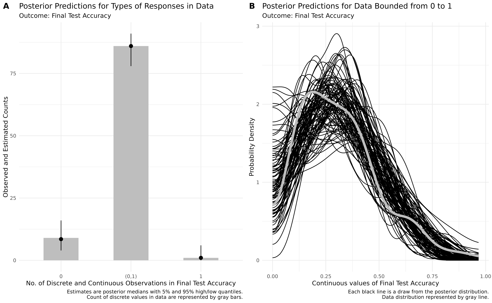

# load brms and cmdstanr
library(brms)
library(cmdstanr)A Beta Way: A Tutorial For Using Beta Regression in Psychological Research
Jason Geller1, Robert Kubinec2, Chelsea M. Parlett Pelleriti3, and Matti Vuorre4
1Department of Psychology and Neuroscience, Boston College
2University of South Carolina
3School
4Tilburg University
Author Note
Jason Geller  https://orcid.org/0000-0002-7459-4505
https://orcid.org/0000-0002-7459-4505
Robert Kubinec  https://orcid.org/0000-0001-6655-4119
https://orcid.org/0000-0001-6655-4119
Chelsea M. Parlett Pelleriti  https://orcid.org/0000-0001-9301-1398
https://orcid.org/0000-0001-9301-1398
Matti Vuorre  https://orcid.org/0000-0001-5052-066X
https://orcid.org/0000-0001-5052-066X
No preregistration for this paper. Data, code, and materials for this manusscript can be found at. The authors have no conflicts of interest to disclose.
Author roles were classified using the Contributor Role Taxonomy (CRediT; https://credit.niso.org/) as follows: Jason Geller: conceptualization, writing – original draft, data curation, writing – review & editing, and formal analysis. Robert Kubinec: writing – original draft, writing – review & editing, and formal analysis. Chelsea M. Parlett Pelleriti: writing – original draft, writing – review & editing, and formal analysis. Matti Vuorre: writing – original draft, writing – review & editing, and formal analysis
Correspondence concerning this article should be addressed to Jason Geller, Department of Psychology and Neuroscience, Boston College, McGuinn 300, Chestnut Hill, MA 2467, USA, Email: drjasongeller@gmail.com
Abstract
Rates, percentages, and proportions are common outcomes in psychology and the social sciences. These outcomes are often analyzed using models that assume normality, but this practice overlooks important features of the data, such as their natural bounds at 0 and 1. As a result, estimates can become distorted. In contrast, treating such outcomes as beta-distributed respects these limits and can yield more accurate estimates. Despite these advantages, the use of beta models in applied research remains limited. Our goal is to provide researchers with practical guidance for adopting beta regression models, illustrated with an example drawn from the psychological literature. We begin by introducing the beta distribution and beta regression, emphasizing key components and assumptions. Next, using data from a learning and memory study, we demonstrate how to fit a Beta regression model in R with the Bayesian package brms and how to interpret results on the response scale. We also discuss model extensions, including zero-inflated, zero- and one-inflated, and ordered beta models. To promote wider adoption of these methods, we provide detailed code and materials at https://github.com/jgeller112/beta_regression_tutorial.
Keywords: beta regression, beta distribution, R, tutorial, psychology, learning and memory
Word Count: 9773
A Beta Way: A Tutorial For Using Beta Regression in Psychological Research
Many important outcomes in psychological research can be expressed as proportions or percentages: the proportion of correct responses on a test, the proportion of looks on a particular stimulus in an eye-tracking task, or the percentage of agreement with a given statement. As a practical example from educational and cognitive research, one popular way to assess learning is by looking at the proportion of correct responses on a test. To illustrate, consider a memory experiment where participants read a short passage on a specific topic. After a brief distractor task, they complete a final memory test consisting of 10 short-answer questions, each assigned a different point value (e.g., question 1 might be worth 4 points, while question 2 might be worth 1 point). The primary outcome measure could be the proportion of points earned on each question relative to the total possible points for each question.
A key question arises: how should proportional data like this be analyzed? In psychology, such outcomes are often analyzed using models from the general linear model (GLM) or generalized linear model (GLiM) frameworks. GLMs — including t-tests, ANOVAs, and linear regression — assume the outcome is normally distributed, unbounded, and exhibits constant variance. However, these assumptions are frequently violated when working with proportional data, which are bounded between 0 and 1 and tend to show non-constant variance, especially near the boundaries (Ferrari & Cribari-Neto, 2004; Paolino, 2001; Smithson & Verkuilen, 2006). This can lead to biased estimates and invalid inferences, making general linear models an unsuitable choice for analyzing proportions.
Another option are GLiMs, which extend the linear model framework to accommodate non-normal outcome distributions and different link functions. For example, binomial or Bernoulli models with a logit link (commonly referred to as logistic regression) are well-suited for binary outcomes or counts of successes out of a fixed number of trials. However, these models may still fall short when data exhibit overdispersion or cluster near 0 or 1.
The challenges of analyzing proportional data are not new (see Bartlett, 1936). Fortunately, several alternative approaches address the limitations of commonly used models. One such approach is Beta regression, an extension of the GLiM that employs the Beta distribution (described in-depth below) (Ferrari & Cribari-Neto, 2004; Paolino, 2001). Beta regression offers a flexible and robust solution for modeling proportional data by accounting for boundary effects and overdispersion, making it a valuable alternative to traditional binomial models. This approach is particularly well-suited for psychological research because it can handle both the bounded nature of proportional data and the non-constant variance often encountered in these datasets.
A Beta Way Forward
With the combination of open-source programming languages like R (R Core Team, 2024) and a vibrant community of package developers, analyses such as Beta regression have become increasingly accessible. Yet, adoption of these methods—particularly in psychology—remains limited. One reason may be the lack of resources tailored to the needs of psychologists. Although recent years have seen a surge of interest in Beta regression with excellent tutorials and guides (Bendixen & Purzycki, 2023; Coretta & Bürkner, 2025; Heiss, 2021; Smithson & Verkuilen, 2006; Vuorre, 2019), its adoption in psychology remains limited.
While previous tutorials have introduced Beta regression, most have been limited in scope—focusing either on the basic model or offering only brief mentions of more complex alternatives. This tutorial aims to fill that gap by offering a comprehensive and practical overview of Beta regression and its extensions. In addition to covering the standard Beta model, we walk through advanced variants such as zero-inflated, zero-one-inflated, and ordered Beta regression. These models are critical for researchers dealing with boundary values (e.g., exact 0s or 1s) or ordinal response structures, yet they remain underutilized in psychology.
Beyond model specification, we place strong emphasis on interpreting results on the response scale—that is, in terms of predicted probabilities and proportions—rather than relying solely on log-odds or latent parameters. This focus makes the models more accessible and meaningful for psychological applications, where effect sizes are often easier to communicate when framed in terms of expected outcomes (e.g., changes in recall accuracy or task performance). Throughout, we provide reproducible code and annotated examples to help readers implement and interpret these models in their own work
In this tutorial, we provide a comprehensive and accessible introduction to Beta regression for psychological research. We begin with a non-technical overview of the Beta distribution and its core parameters, laying the foundation for understanding how the model works. We then walk through the process of fitting Beta regression models using the R package brms, illustrating each step with applied examples. To help researchers make sense of model output, we offer guidance on interpreting coefficients, predicted probabilities, and marginal effects using the marginaleffects package (Arel-Bundock et al., 2024). We also introduce several useful extensions—such as zero-inflated (ZIB), zero-one-inflated (ZOIB), and ordered Beta regression models—that enable researchers to model outcomes that include exact boundary values like 0 and 1. Finally, all code and materials used in this tutorial are fully reproducible and available via our GitHub repository: https://github.com/jgeller112/beta_regression_tutorial1
Beta Distribution
Proportional data pose some challenges for standard modeling approaches. That is, the data are bounded between 0 and 1 and often exhibit non-constant variance (heteroscedasticity) (Ferrari & Cribari-Neto, 2004; Paolino, 2001). Common distributions used within the GLM or GLiM frameworks often fail to capture these properties adequately, which can necessitate alternative modeling strategies.
In any statistical model, the expected value (or mean) of the response variable serves as the central estimand we aim to describe and predict. The model specifies how this expected value depends on explanatory variables through several components: a random component that specifies the distribution of the response variable around its expected value (such as a Poisson or binomial, which are part of the exponential family), a linear predictor that combines explanatory variables in a linear form, and a link function that connects the mean of the response variable to the linear predictor (also referred to as the expected value) (Nelder & Wedderburn, 1972). Together, these components provide a flexible framework for modeling data with different distributional properties.
The Beta distribution offers a compelling solution (Paolino, 2001). The Beta distribution is continuous, restricted to values between 0 and 1 (exclusive), and highly flexible. Its two shape parameters—commonly called shape1 (\alpha) and shape2 (\beta)—govern the distribution’s location, skewness, and spread. By adjusting its two shape parameters it can take on many functional forms (e.g., it can be symmetric, skewed, U-shaped, or even approximately uniform; see Figure 1).
To see this intuitively, consider a test question worth six points. Suppose a participant scores four out of six. The number of points received (4) can be treated as \alpha, and the number of points missed (2) as \beta. The resulting Beta distribution would be skewed toward higher values, reflecting a high performance. Reversing these values would produce a distribution skewed toward lower values, representing poorer performance (see Figure 2). These parameterizations offer a natural way to visualize performance data as probability densities.
Figure 1
Beta distributions with different shape1 and shape2 parameters

Figure 2
A. beta distribution with 4 correct (shape1) and 2 incorrect (shape2) responses (shape2) on one test question. B. beta distribution with 2 correct (shape1) and 4 incorrect (shape2) responses on one test question

Beta Regression
While \alpha and \beta are useful for defining the distribution, regression modeling typically uses a reparameterized form involving the mean \mu and precision \phi . The mean (\mu) represents the expected value of the distribution, while the dispersion (\phi), which is inversely related to variance, reflects how concentrated the distribution is around the mean, with higher values of \phi representing a narrower distribution while lower values of \phi represent a wider, more spread out, distribution. These are connected to \alpha and \beta as follows:
\begin{aligned}[t] \text{Shape 1:} && a &= \mu \phi \\ \text{Shape 2:} && b &= (1 - \mu) \phi \end{aligned} \qquad\qquad\qquad \begin{aligned}[t] \text{Mean:} && \mu &= \frac{a}{a + b} \\ \text{Precision:} && \phi &= a + b \end{aligned}
The variance can then be calculated as a function of \mu and \phi:
\frac{\mu \cdot (1 - \mu)}{1 + \phi}
Importantly, the variance depends on the average value of the response, which is what allows the model to non-linearly adjust to the bounds of the outcome.
In Beta regression, the goal is to model the mean of the response variable (often denoted \mu) as a function of predictor variables, while optionally modeling a precision or dispersion parameter (often denoted \phi) that captures variability around the mean. To ensure that \mu stays between 0 and 1, we apply a link function, which transforms the mean so that it can be modeled on an unbounded scale. A common choice is the logit link (which is used by default), but other links (such as the probit or complementary log-log) are also available; the logit is not required.
The logit link is defined as \text{logit}(\mu) = \log \left( \frac{\mu}{1 - \mu} \right). This transforms the mean proportion, \mu, into log-odds, which can take any real value between -\infty and +\infty. This makes it suitable for linear modeling. The inverse of the logit, called the logistic function, maps predictions back onto the 0 to 1 scale: \left[ \mu = \frac{1}{1 + e^{-\eta}} \right] where \eta is the linear predictor (a combination of your model’s coefficients and predictors). Similarly, the dispersion parameter, which must be positive, is often modeled using a log link: \log(\phi) = \text{linear predictor}. This ensures the estimated dispersion is strictly positive.
Beta regression is designed specifically for modeling bounded, continuous outcomes. It respects the (0, 1) range of proportional data, accounts for varying variance across levels of the mean, and provides a coherent statistical foundation for estimating effects on proportions and percentages. This makes it especially useful in psychology, where outcomes like accuracy, recall rates, or rating scales often fall within this bounded range.
Bayesian Approach to Beta Regression
Beta regression models can be estimated from either a frequentist or Bayesian perspective. In this tutorial, we adopt a Bayesian framework—not because it is inherently superior, but because it offers practical advantages for fitting both simple and complex models (Gelman et al., 2013; Johnson et al., n.d.; McElreath, 2020), especially in the context of psychological data. The R package brms (Bürkner, 2017), which interfaces with the probabilistic programming language Stan (Team, 2023), makes Bayesian modeling accessible and flexible, even for users with limited prior experience in Bayesian statistics.
At the heart of Bayesian estimation is the idea of updating beliefs. This invovles first specifying prior distributions that represent our beliefs about the parameters before observing any data. These priors are then updated through the likelihood function using the observed data, producing posterior distributions. The posterior reflects what we believe about the parameters after taking the data into account. Unlike frequentist approaches that yield point estimates and confidence intervals, Bayesian methods return full distributions over parameters. These distributions allow researchers to express uncertainty more directly, make probability-based claims, and explore the full range of plausible values for each estimate.
The models we fit throughout this tutorial are estimated using brms, which supports a wide range of regression families, including the Beta distribution and its extensions. It also allows for flexible model specification, including hierarchical structures, non-default link functions, and separate sub-models for different components.
Behind the scenes, brms uses Markov Chain Monte Carlo (MCMC) sampling to draw from the posterior distribution. This process generates a range of representative values for each parameter, allowing researchers to capture and quantify uncertainty. The resulting output can be summarized in several ways (see Makowski, Ben-Shachar, Chen, et al., 2019). Point estimates, such as the posterior mean or median, serve as central tendency measures of the parameter distributions. Credible intervals, typically the 95% Cr.I., indicate the range of values within which a parameter is likely to fall given the data and prior assumptions. In addition, researchers can examine the probability of direction (pd), which reflects the proportion of the posterior distribution that lies entirely above or below zero, offering an intuitive summary of effect direction. Finally, Bayes Factors can be used to quantify the relative evidence for one model or hypothesis over another.
Throughout the tutorial, we will demonstrate how to fit these Bayesian Beta regression models using the brm() function. We will also focus on interpreting the results in terms of probabilities and proportions on the original response scale, rather than staying solely on the logit or latent scale.
Motivating Example
Data and Methods
To demonstrate how Beta regression can be applied in practice, we re-analyze data from a memory experiment conducted by Wilford et al. (2020); Experiment 1A. This study investigated whether the fluency of an instructor’s delivery influenced participants’ memory performance on a final recall test. By working through this dataset, we illustrate each stage of Beta modeling—from basic regression to more advanced extensions—and show how Beta regression can offer more accurate and interpretable inferences for bounded outcome variables.
The idea that extrinsic cues, such as how easily information is processed, influence metamemory has been widely documented. In particular, a growing body of research has examined the role of instructor fluency—characterized by dynamic vocal intonation, purposeful gestures, mobility, and natural pacing—in shaping students’ perceptions of learning. Although fluent instructors are often judged as more effective, several studies have shown that fluency has little to no impact on actual memory performance Toftness et al. (2017). However, Wilford et al. (2020) reported the opposite: in a series of experiments, they found that participants recalled more information when watching a fluent versus a disfluent instructor. This contradictory pattern makes the dataset especially useful for illustrating statistical approaches to analyzing proportion data.
In Experiment 1A of Wilford et al. (2020), participants watched two brief instructional videos—one on the genetics of calico cats, the other on the biology of skin wrinkling. Each video was presented in either a fluent or disfluent style. The fluent condition featured instructors with smooth delivery, clear vocal modulation, and confident pacing. The disfluent condition included hesitations, monotone delivery, and unnatural pauses. After viewing the videos, participants made judgments of learning (JOLs), rating how likely they were to remember the material on a scale from 0 to 100. They also answered questions about the instructor and self-reported how much they believed they had learned. Following a distractor task, participants completed a free recall test, writing down as much information as they could remember from each video within a three-minute time limit. Each response was scored out of 10 possible idea units per video.
Our primary outcome variable is the proportion of idea units recalled on the final test, calculated by dividing the number of correct units by 10. Because this is a bounded continuous variable (i.e., it ranges from 0 to 1), it violates the assumptions of models like linear regression that treat outcomes as unbounded and homoscedastic. Despite this, it remains common in psychological research to analyze proportion data using models that assume normality. In what follows, we reproduce Wilford et al.’s original analysis and then re-analyze the data using Beta regression. Our goal is to highlight how Beta regression—and its extensions—can offer a more robust, flexible, and interpretable framework for modeling proportional outcomes.
Reanalysis of Wilford et al. Experiment 1A
In their original analysis of Experiment 1A, Wilford et al. (2020) compared memory performance between fluent and disfluent instructor conditions using a traditional independent-samples t-test. They found that participants who watched the fluent instructor recalled significantly more idea units than those who viewed the disfluent version (see Figure 3).
In our reanalysis, we take a Bayesian regression approach to replicate and extend these findings. Specifically, we model final test accuracy—defined as the number of correctly recalled idea units out of 10, converted to a proportion by dividing by 10—as the dependent variable. Our primary predictor is instructor fluency, with two levels: Fluent and Disfluent.
We use treatment (dummy) coding, which is the default in R. This coding scheme sets the first level of a factor (in alphabetical order) as the reference level. In this case, Disfluent is the reference, and the coefficient for Fluent reflects the contrast between fluent and disfluent instructor conditions.
We estimate the model using the brm() function from the brms package, with default (weakly informative) priors. This choice mirrors a common starting point for applied researchers and ensures that the results are primarily driven by the data. By using Bayesian estimation, we can go beyond simple group comparisons to quantify uncertainty, interpret results on the probability scale, and visualize the posterior distribution of the fluency effect.
Table 1
First six rows of dataset
| Participant | Fluency | Accuracy |
|---|---|---|
| 1 | Fluent | 0.45 |
| 8 | Fluent | 0.30 |
| 10 | Fluent | 0.40 |
| 18 | Fluent | 0.15 |
| 19 | Fluent | 0.50 |
| 14 | Fluent | 0.70 |
Figure 3
Fluency accuracy: Raw data (points), half-boxplot, and Mean marker (diamond)

Data
Before we fit the regression model, we will read in the data.
The first few rows of the data are displayed in Table 1. The dataset contains three columns:
Participant:Participant ID numberFluency: Fluent vs. DisfluentAccuracy: Proportion recalled (idea units)
Table 2
Regression model summaries for each model

Note. Mean95% Cr.I; mu = logit; phi = log; zi= logit; zoi = logit; coi = logit
Bayesian Regression
To fit our Bayesian regression models, we will be using the brms (Bürkner, 2017) R package. For reference, lists each model that was run, along with the model parameters and posterior summaries, including the mean, 95% credible intervals (Cr.I), and posterior probabilities of direction (pd). For the following analyses we will be using default priors provided by brms, which are non-informative or weak. This will get us something tantamount to a frequentist model with maximum likelihood estimates most of the readers should be familiar with. For the purposes of this tutorial, we will not be getting into the minutiae of Bayesian data analysis (i.e., setting informative priors, MCMC sampling, etc,). For a more in-depth look into Bayesian data analysis I refer the reader to McElreath (2020) and Johnson et al. (n.d.).
To create a regression model from in brms we will use the brm() function and fit a model looking at final test accuracy (Accuracy) as a function of instructor fluency (fluency). The syntax is similar to how you run a regression using the popular lm function in R. Here we are concerned with modeling mean performance differences between the fluency and disfluency conditions.
We first start by loading the brms (Bürkner, 2017) and cmdstanr (Gabry et al., 2024) packages. We use the cmdstanr backend for Stan (Team, 2023) because it’s faster and more modern than the defaults used to run models.2
We fit the model using the brm() function, as shown in the code below. To speed up processing we set cores = 4, and use the cmdstand backend. The output provides estimates for each effect: the coefficient (b_,) representing the mean of the posterior distribution), its estimation error (the standard deviation of the posterior distribution), and the 95% credible interval (Cr.I), which indicate the most credible values within the distribution. We inferred evidence for an effect when the 95% Cr.I did not include zero.
# fit ols reg
bayes_ols_model <- brm(
Accuracy ~ Fluency,
data = fluency_data,
cores = 4,
backend = "cmdstanr",
file = "model_ols_bayes"
)Table 2 displays the summary of the Bayesian regression model. To make the output more readable, each model parameter is labeled with a prefix before the variable name. The b_Intercept value refers to the accuracy in the disfluent condition (because we dummy coded our variable). The Fluency coefficient (b_FluencyFluent) highlights the difference between the fluent and disfluent conditions, b = 0.084, 95% Cr.Is = [0.002,0.166], pd =1. Our results are very similar to the results reported by Wilford et al. (2020) : t(94) = 2.00, p = .048, 95% CI [0.06, 16.56].
There are some notable differences between our Bayesian analysis and the frequenist analyses readers might be more sued to seeing, such as the absence of t- and p-values. There is a metric in the table that is included with models fit when using the bayestestr (Makowski, Ben-Shachar, & Lüdecke, 2019) function from easystats called probability of direction (pd) that gives an indication of how much of the posterior distribution estimate is in one direction (positive or negative). The pd measure appears to correlated with p-values (see (Makowski, Ben-Shachar, & Lüdecke, 2019; Makowski, Ben-Shachar, Chen, et al., 2019)). A pd of 95%, 97.5%, 99.5% and 99.95% correspond approximately to two-sided p-value of respectively .1, .05, .01 and .001. In addition to the pd value, one can look at the 95% credible interval (sometimes called highest probability density, depending on the package being used) to see if it includes 0–if it does not then the effect can be said to be significant. In the table below, the 95% credible intervals are located in the 95% Cr.Is column.
Beta Regression
Wilford et al. (2020), using a traditional GLM approach, observed that instructor fluency impacts actual learning. Keep in mind the traditional approach assumes normality of residuals and homoscadacity or constant variance. These assumptions are tricky to maintain when the continuous response approaches either the upper or lower boundary of the scale and are almost never true (see (Sladekova & Field, 2024). Does the data we have meet those assumptions? Using easystats (Lüdecke et al., 2022) and the check_model() function, we can easily check this. In Figure 4 , we see there definitely some issues with our model. Specifically, there appears to be violations of normality constant variance (homogeneity).
We can also examine how well the data fits the model by performing a posterior predictive check. In Figure 5, multiple draws or repetitions from the posterior distribution are plotted (light blue lines) against the observed data. (dark green). Ideally, the predictive draws (the light blue lines) should show reasonable resemblance with the observed data (dark blue line). In our example, the model-predicted density is slightly too peaked and narrow compared to the data. In addition, some of the draws extend into negative accuracy values.
Figure 4
Two assumption checks for our OLS model: Normality (left) and Homogeneity (right)

Figure 5
Posterior predictive check

Given the outcome variable is proportional, one solution would be to run a beta regression model.
Again, we can create the beta regression model in brms. In brms, we model each parameter independently. Recall from the introduction that in a Beta model we model two parameters—\mu and \phi. We can easily do this by using the bf() function from brms. bf() facilitates the specification of several sub-models within the same formula call. We fit two formulas, one for \mu and one for \phi and store it in the model_beta_bayes object below. In the below bf() call, we are modeling Fluency as a function of Accuracy only for the \mu parameter. For the \phi parameter, we are only modeling the intercept value. This is saying dispersion does not change as a function of fluency.
# fit model with mu and phi
model_beta_bayes <- bf(
Accuracy ~ Fluency, # fit mu model
phi ~ 1 # fit phi model
)If we try to run beta_brms, however, we get an error: Error: Family 'beta' requires response greater than 0. This is by design. If your remember, the Beta distribution can only model responses in the interval [0-1], but not responses that are exactly 0 or 1. We need make sure there are no zeros and ones in our dataset.
Table 3
Number of zeros and ones in our dataset
| Accuracy | Count |
|---|---|
| 0 | 9 |
| 1 | 1 |
Table 3 shows we have 9 rows with accuracy of 0, and 1 row with an accuracy of exactly 1. To run a Beta regression, a common hack is to nudge our 0s towards .01 and our 1s to .99 so they fall within the interval of [0-1]. The model beta_brms uses data where 0s and 1s are changed to .01 and .99, respectively.
We can rerun our model replacing fluency_data with data_beta in the below function call.
No errors this time! We will perform the Beta regression using the nudged values of .01 and .99 values and report our results.
Model Parameters.
Table 2 displays the summary from all out Bayesian implementation. 3 The \mu parameter estimates, which are labeled with an underscore b_while \phi parameter coefficients are tagged with b_phi in the Parameter column.
Mean \mu
In Table 2 under the Beta Regression column, the first set of coefficients represent how factors influence the \mu parameter, which is the mean of the beta distribution. These coefficients are interpreted on the scale of the logit, meaning they represent linear changes on a nonlinear space. The intercept term (b_Intercept) represents the log odds of the mean on accuracy for the fluent instructor. Log odds that are negative indicate that it is more likely a “success” (like getting the correct answer) will NOT happen than that it will happen. Similarly, regression coefficients in log odds forms that are negative indicate that an increase in that predictor leads to a decrease in the predicted probability of a “success”.
Predicted Probabilities.
Parameter estimates are usually difficult to intercept on their own. We argue that researchers should not spend too much time interpreting single model estimates. We report them in this tutorial for completeness. Instead researchers should discuss the effects of the predictor on the actual outcome of interest (in this case the 0-1 scale). The logit link allows us to transform back and forth between the scale of a linear model and the nonlinear scale of the outcome, which is bounded by 0 and 1. By using the inverse of the logit, we can easily transform our linear coefficients to obtain average effects on the scale of the proportions or percentages, which is usually what is interesting to applied researchers. In a simple case, we can do this manually, but when there are many factors in your model this can be quite complex.
In our example, we can use the plogis() function in base R to convert estimates from the log-odds (logit) scale to the probability scale. The intercept of our model is -0.918, which reflects the log-odds of the mean accuracy in the disfluent condition. If the estimated difference between the fluent and disfluent conditions is 0.24 on the log-odds scale, we first add this value to the intercept to get the log-odds for the fluent condition: -0.918 + 0.24 = -0.678. We then use plogis() to convert both log-odds values to probabilities:
# Log-odds for each condition
log_odds_disfluent <- -1.036
log_odds_fluent <- log_odds_disfluent + 0.24
# Convert to probabilities
prob_disfluent <- plogis(log_odds_disfluent)
prob_fluent <- plogis(log_odds_fluent)
# View results
prob_disfluent # ≈ 0.262
prob_fluent # ≈ 0.355This is pretty easy to do manually, but when your model has many predictors, it can be quite cumbersome. To help us extract predictions from our model and visualize them we will use a package called marginaleffects (Arel-Bundock et al., 2024). 4 To get the proportions for each of our categorical predictors on the mu parameter we can use the function from the package called predictions(). These are displayed in Table 4.
# load marginaleffects package
library(marginaleffects)# use predictions to get predicted probs for each condition
redictions(
beta_brms,
newdata = datagrid(Fluency = c("Disfluent", "Fluent")) # need to specify the levels of the categorical predictor
)Table 4
Predicted probablities for fluency factor
| Fluency | Mean | 95% Cr.I |
|---|---|---|
| Disfluent | 0.264 | [0.213, 0.322] |
| Fluent | 0.357 | [0.293, 0.423] |
For the Fluency factor, we can interpret the Mean column in terms of proportions or percentages. That is, participants who watched the fluent instructor scored on average 36% on the final exam compared to 26% for those who watched the disfluent instructor.
We can also easily visualize these from marginaleffects using the plot_predictions function. After using this function, the proportions are visualized in Figure 6.
beta_plot <- plot_predictions(beta_brms, condition = "Fluency")Figure 6
Predicted probablities for fluency factor

Readers might notice that Figure 6 displays a single point estimate along with its 95% Cr.I.. In Bayesian data analysis, MCMC sampling generates a distribution for each parameter of interest. This approach allows us to visualize the uncertainty surrounding our estimates. Using the marginaleffects package, we can obtain samples from the posterior distribution with the posterior_draws() function. We can then plot these results to illustrate the range of plausible values for our estimates at different levels of uncertainty (e.g., 80% or 95%) (see Figure 7).
Figure 7
Predicted probablity posterior distributions by fluency

Marginal Effects.
Marginal effects provide a way to understand how changes in a predictor influence an outcome, holding all other factors constant in a specific manner. Technically, marginal effects are calculated using partial derivatives for continuous variables or finite differences for categorical and continuous variables, depending on the nature of the data and the research question. Substantively, these effects translate regression coefficients into a form that can be interpreted directly on the outcome scale of interest.
There are various types of marginal effects, and their calculation can vary across software packages. For example, the popular emmeans package [] computes marginal effects by holding all predictors at their means. In this tutorial, we will use the marginaleffects package, which focuses on average marginal effects (AMEs) by default. AMEs summarize effects by generating predictions for each row of the original dataset and then averaging these predictions. This approach retains a strong connection to the original data while offering a straightforward summary of the effect of interest.
One practical application of AMEs is calculating the risk difference for categorical variables. The risk difference represents the difference in average outcomes between two groups or conditions. Using the avg_comparisons() function in the marginaleffects package, we can compute this metric directly. By default, the function calculates the discrete difference between groups. It can also compute other effect size metrics, such as odds ratios and risk ratios, depending on the research question (see Table 6 for more details). This flexibility makes it a powerful tool for interpreting regression results in a meaningful way.
# get risk difference by default
beta_avg_comp <- avg_comparisons(beta_brms)Table 5
Risk difference for instructor fluency
| Term | Contrast | Mean | 95% Cr.I |
|---|---|---|---|
| Fluency | Fluent - Disfluent | 0.093 | [0.009, 0.176] |
Table 5 displays the risk difference for the fluency factor (estimate column). The difference between the fluent and disfluent conditions is .09. That is, participants who watched a fluent instructor scored 9% higher on the final recall test than participants who watched the disfluent instructor. Our credible interval [-.0174, -0.011] shows that zero is not among the 95% most credible values.
We can also get the odds ratio with avg_comparisons (see Table 6).
Table 6
Odds ratio for fluency factor
| Term | Contrast | Mean | 95% Cr.I |
|---|---|---|---|
| Fluency | ln(odds(Fluent) / odds(Disfluent)) | 1.552 | [1.041, 2.307] |
In psychology, it is common to report effect size measures like Cohen’s d (Cohen, 1977). When working with proportions we can calculate something similar called Cohen’s h. Taking our proportions, we can use the below equation to calculate Cohen’s h along with the 95% Cr.Is around it.
h = 2 \cdot \left( \arcsin\left(\sqrt{p_1}\right) - \arcsin\left(\sqrt{p_2}\right) \right)
Using this metric we see the effect size is small (0.17), 95% Cr.I [-0.002, 0.361].
Precision (\phi) Component
The other component we need to pay attention to is the dispersion or precision parameter coefficients labeled as `b_phi in Table 2. The dispersion (\phi) parameter tells us how precise our estimate is. Specifically, \phi in Beta regression tells us about the variability of the response variable around its mean. Specifically, a higher dispersion parameter indicates a narrower distribution, reflecting less variability. Conversely, a lower dispersion parameter suggests a wider distribution, reflecting greater variability. The main difference between a dispersion parameter and the variance is that the dispersion has a different interpretation depending on the value of the outcome, as we show below. The best way to understand dispersion is to examine visual changes in the distribution as the dispersion increases or decreases.
Understanding the dispersion parameter helps us gauge the precision of our predictions and the consistency of the response variable. In beta_brms we only modeled the dispersion of the intercept. When \phi is not specified, the intercept is modeled by default (see Table 2).
The intercept under the precision heading is not that interesting. It represents the overall dispersion in the model. We can model the dispersion of the Fluency factor—this allows dispersion to differ between the fluent and disfluent conditions. To do this we add Fluency to the phi model in bf(). We model the precision of the Fluency factor by using a ~ and adding factors of interest to the right of it.
model_beta_bayes_disp <- bf(
Accuracy ~ Fluency, # fit mu model
phi ~ Fluency # fit phi model with fluency
)beta_brms_dis <- brm(
model_beta_bayes_disp,
data = data_beta,
family = Beta(),
chain = 4,
cores = 4,
backend = "cmdstanr",
file = "model_beta_bayes_dis_run" # Save this so it doesn't have to always rerun
)Table 2 displays the model summary with the precision parameter added to our model as a function of fluency. It is important to note that the estimates are logged and not on the original scale (this is only the case when additional parameters are modeled). To interpret them on the original scale, we can exponentiate the log-transformed value—this transformation gets us back to our original scale . In below model call, we set exponentiate = TRUE.
beta_model_dis_exp <- beta_brms_dis |>
model_parameters(exponentiate = TRUE, centrality = "mean")Table 7
Beta regression model summary for fluency factor with \phi parameter exponentiated
| Parameter | Mean | 95% Cr.I | pd |
|---|---|---|---|
| b_phi_Intercept | 2.41 | [1.655, 3.365] | 1 |
| b_phi_FluencyFluent | 2.52 | [1.483, 4.267] | 1 |
The \phi intercept represents the precision of the fluent condition. The \phi coefficient for Fluency1 represents the change in that precision for performance between the fluent vs. disfluent conditions. The Cr.I [.235, .684] do not include 0 so our results are statistically significant.
It is important to note that these estimates are not the same as the marginal effects we discussed earlier. Changes in dispersion will change the shape of the distribution but not necessarily the average value of the response. This makes dispersion most interesting for research questions that focus on other features of the distribution besides the mean, such as the level of polarization in an outcome.
A critical assumption of the GLM is homoscedasticity, which means constant variance of the errors. Here we see one of the benefits of a beta regression model: we can include a dispersion parameter for Fluency. Properly accounting for dispersion is crucial because it impacts the precision of our mean estimates and, consequently, the significance of our coefficients. The inclusion of dispersion in the our model increased the uncertainty of the \mu coefficient (see Figure 8)–our Cr.I is now very close to zero. This suggests that failing to account for the dispersion of the variables might lead to biased estimates. This highlights the potential utility of an approach like Beta regression over a traditional approach as Beta regression can explicitly model dispersion and address issues of heteroscedasticity.
We won’t always need to include dispersion parameters for each of our variables. We advise conducting very simple model comparisons like leave one out (loo) cross validation to examine if a dispersion parameter should be considered in our model.
Figure 8
Comparison of posterior distributions for the risk difference in fluency: Simple model (no dispersion for Fluency) vs. complex model with dispersion

Posterior Predictive Check
It is a always a good idea to check how well your data fits the model. The pp_check() function allows us to examine the fit between our data and the model. In Figure 9, multiple draws or repetitions from the posterior distribution are plotted (light blue lines) against the observed data. (dark blue). Ideally, the predictive draws (the light blue lines) should show reasonable resemblance with the observed data (dark blue line). We see it does a pretty good job capturing the data. Ideally, the predictive draws (the light blue lines) should show reasonable resemblance with the observed data (dark blue line). We see it does a pretty good job capturing the data.
Figure 9
Posterior predictive check for our Beta model with 100 draws.

Zero-Inflated Beta (ZIB) Regression
A limitation of the beta regression model is it can can only model values between 0 and 1, but not exactly 0 or 1. In our dataset we have 9 rows with Accuracy equal to zero.
To use the Beta distribution we nudged our zeros to 0.01–which is never a good idea in practice. In our case it might be important to model the structural zeros in our data, as fluency of instructor might be an important factor in predicting the zeros in our model. There is a model called the zero-inflated beta (ZIB) model that takes into account the structural 0s in our data. We’ll still model the \mu and \phi (or mean and precision) of the Beta distribution, but now we’ll also add one new special parameter: \alpha.
With zero-inflated regression, we’re actually modelling a mixture of the data-generating process. The \alpha parameter uses a logistic regression to model whether the data is 0 or not. Substantively, this could be a useful model when we think that 0s come from a process that is relatively distinct from the data that is greater than 0. For example, if we had a dataset of with proportion of looks or eye fixations to certain areas on marketing materials, we might want a separate model for those that do not look at certain areas on the screen because individuals who do not look might be substantively different than those that look.
We can fit a ZIB model using brms and use the marginaleffects package to make inferences about our parameters of interest. Before we run a zero-inflated beta model, we will need to transform our data again and nudge our 1s to .99–we can keep our zeros. Similar to our Beta regression model we fit in brms, we will use the bf() function to fit several models. We fit our \mu and \phi parameters as well as our zero-inflated parameter (\alpha; here labeled as zi). In brms we can use the zero_inflated_beta family.
#|
# fit zero-inflated beta in brms
zib_model <- bf(
Accuracy ~ Fluency, # The mean of the 0-1 values, or mu
phi ~ Fluency, # The precision of the 0-1 values, or phi
zi ~ Fluency, # The zero-or-one-inflated part, or alpha
family = zero_inflated_beta()
)Below we pass zib_model to the brm function.
fit_zi <- brm(
formula = zib_model,
data = data_beta_0,
chain = 4,
cores = 4,
backend = "cmdstanr",
file = "model_beta_bayes_zib"
)Predicted Probabilities and Marginal Effects
Table 2 under the zero-inflated Beta regression column provides a summary of the posterior distribution for each parameter. As stated before, it is preferable to back-transform our estimates to get probabilities. To get the predicted probabilities we can use the avg_predictions() function and to get risk difference between the levels of each factor we can use the avg_comparisons() function from marginaleffects package (Arel-Bundock, 2024). We can model the parameters separately using the dpar argument setting to: \mu, \phi, \alpha. Here we look at the risk difference for Fluency under each parameter.
Mean (\mu).
Looking at Table 8 there is no significant effect for Fluency.
Table 8
Risk difference (\mu) for fluency factor
| Term | Contrast | Mean | 95% Cr.I |
|---|---|---|---|
| Fluency | Fluent - Disfluent | 0.006 | [-0.08, 0.087] |
Dispersion (\phi).
Looking at Table 9, there is a significant effect of fluency on dispersion, with disfluency having a larger variation than fluency.
Table 9
Risk difference (\phi) for fluency factor
| Term | Contrast | Mean | 95% Cr.I |
|---|---|---|---|
| Fluency | Fluent - Disfluent | 4.4 | [1.286, 8.153] |
Zero-Inflated (\alpha)
In Table 10 we see that watching a lecture video with a fluent instructor reduces the proportion of zeros by about 13%. The Cr.I does not include zero.
If we wanted we could easily visualize the zero-inflated part of the model (see Figure 10).
Figure 10
Visualization of predicted probablites for zero-inflated part of model

Zero-One-Inflated Beta (ZOIB)
The ZIB model works well if you have 0s in your data, but not 1s.5 In our previous example, we nudged our 1s to .99. Kubinec (2022) showed that this practice can result in serious distortion of the outcome as the sample size 𝑁 grows larger, resulting in ever smaller values that are “nudged”. Because the Beta distribution is a non-linear model of the outcome, values that are very close to the boundary, such as 0.00001 or 0.99999, will be highly influential outliers. Sometimes it is theoretically useful to model both zeros and ones as separate processes or to consider these values as essentially similar parts of the continuous response, as we show later in the ordered Beta regression model. For example, this is important in visual analog scale data where there might be a prevalence of responses at the bounds (Kong & Edwards, 2016), in JOL tasks (Wilford et al., 2020), or in a free-list task where individuals provide open responses to some question or topic which are then recoded to fall between 0-1 (Bendixen & Purzycki, 2023). Here 0s and 1s are meaningful; 0 means item was not listed and 1 means the item was listed first.
In our data, we have exactly one value equal to 16. While probably not significant to alter our findings, we can model ones with a special type of model called the zero-one-inflated beta (ZOIB) model (Liu & Kong, 2015) if we believe that both 0s and 1s are distinct outcomes.
Similar to our beta and zero-inflated models above, we can fit a ZOIB model in brms quite easily using the zero_one_inflated_beta family. In this model, we simultaneously estimate the mean (\mu) and precision (\phi) of the Beta distribution, a zero-one inflation parameter (\alpha) that represents the probability that an observation is either exactly 0 or 1 (i.e., 0 or 1 vs. not 0 or 1) and a conditional one-inflation parameter (\gamma) that represents the probability that, given an observation is at one of the endpoints, it is 1 (i.e, 1 vs. not 1). This specification captures the entire range of possible values while remaining constrained between 0 and 1. To get a better sense of how \alpha and \gamma control the distribution of values, Figure 11 presents simulated data across combinations of these parameters. As \alpha increases, we see a greater proportion of responses at the endpoints. As \gamma increases, the proportion of endpoint responses at 1 grows relative to 0, making the spikes at 1 more prominent as \gamma approaches 1. This visualization illustrates how the ZOIB model flexibly accounts for both the continuous portion of the distribution and the occurrence of exact 0s and 1s.
Figure 11
Simulated data from a ZOIB model illustrating the effects of the zero-one inflation parameter (\alpha) and the conditional one-inflation parameter (\gamma).

To fit a ZOIB model we use the bf() function. We model each parameter as a function of Fluency.
# fit the zoib model
zoib_model <- bf(
Accuracy ~ Fluency, # The mean of the 0-1 values, or mu
phi ~ Fluency, # The precision of the 0-1 values, or phi
zoi ~ Fluency, # The zero-or-one-inflated part, or alpha
coi ~ Fluency, # The one-inflated part, conditional on the 0s, or gamma
family = zero_one_inflated_beta()
)We then pass the zoib_model to our brm() function. The summary of the output is in Table 2 (under ZOIB).
# run the zoib mode using brm
fit_zoib <- brm(
formula = zoib_model,
data = fluency_data,
chains = 4,
cores = 4,
backend = "cmdstanr",
file = "model_beta_zoib_1"
)Model Parameters
The output for the model is pretty lengthy we are estimating four parameters each with their own independent responses and sub-models. All the coefficients are on the logit scale, except \phi , which is on the log scale. Thankfully drawing inferences for all these different parameters, plotting their distributions, and estimating their average marginal effects looks exactly the same—all the brms and marginaleffects functions we used work the same.
Predictions and Marginal Effects
With marginaleffects we can choose marginalize over all the sub-models, averaged across the 0s, continuous responses, and 1s in the data, or we can model the parameters separately using the dpar argument like we did above setting it to: \mu, \phi, \alpha, \gamma (see below). Using avg_predictions() and not setting dpar we can get the predicted probabilities across all the sub-models. We can also plot the overall difference between fluency and disfluency for the whole model with plot_predictions().
We wont highlight all the parameters for this model \mu, \phi and \alpha are the same as above, but below I show how one can extract the predicted probabilities and marginal effects for \gamma .
\gamma
Ordered Beta Regression
Looking at the output from the ZOIB model (Table 2), we can see how running a model like this can become vastly complex and computational intensive as it is fitting sub-models for each parameter. The ability to consider 0s and 1s as distinct processes from continuous values comes at a price in terms of complexity. A special version of the ZOIB was recently developed called ordered beta regression (Kubinec, 2022). The ordered beta regression model allows for the analysis of continuous data (between 0-1) and discrete outcomes (e.g., 0 or 1) without requiring that either be fully distinct from the other. In the simplest sense, the ordered beta regression model is a hybrid model that estimates a weighted combination of a beta regression model for continuous responses and a logit model for the discrete values of the response.
The weights that average together the two parts of the outcome (i.e., discrete and continuous) are determined by cutpoints that are estimated in conjunction with the data in a similar manner to what is known as an ordered logit model. An in-depth explanation of ordinal regression is beyond the scope of this tutorial (Bürkner & Vuorre, 2019; but see Fullerton & Anderson, 2021). At a basic level, ordinal regression models are useful for outcome variables that are categorical in nature and have some inherent ordering (e.g., Likert scale items). To preserve this ordering, ordinal models rely on the cumulative probability distribution. Within an ordinal regression model it is assumed that there is a continuous but unobserved latent variable that determines which of k ordinal responses will be selected. For example on a typical Likert scale from ‘Strongly Disagree’ to ‘Strongly Agree’, you could assume that there is a continuous, unobserved variable called ‘Agreement’. While we cannot measure Agreement directly, the ordinal response gives us some indication about where participants are on the continuous Agreement scale. k - 1 cutoffs are then estimated to indicate the point on the continuous Agreement scale at which your Agreement level is high enough to push you into the next ordinal category (say Agree to Strongly Agree). Coefficients in the model estimate how much different predictors change the estimated continuous scale (here, Agreement). Since there’s only one underlying process, there’s only one set of coefficients to work with (proportional odds assumption). In an ordered beta regression, three ordered categories are modeled: (1) exactly zero, (2) somewhere between zero and one, and (3) exactly one. In an ordered beta regression, (1) and (2) are modeled with cumulative logits, where one cutpoint is the the boundary between Exactly 0 and Between 0 and 1 and the other cutpoint is the boundary between Between 0 and 1 and Exactly 1. Somewhere between 0-1 (3) is modeled as a beta regression with parameters reflecting the mean response on the logit scale. Ultimately, employing cutpoints allows for a smooth transition between the bounds and the continuous values, permitting both to be considered together rather than modeled separately as the ZOIB requires.
The ordered beta regression model has shown to be more efficient and less biased than some of the methods discussed (Kubinec, 2022) herein and has seen increasing usage across the biomedical and social sciences (Martin et al., 2024; Nouvian et al., 2023; Shrestha et al., 2024; Smith et al., 2024; Wilkes et al., 2024) because it produces only a single set of coefficient estimates in a similar manner to a standard beta regression or OLS.
Fitting an Ordered Beta Regression
To fit an ordered Beta regression in a Bayesian context we use the ordbetareg (Kubinec, 2023) package. ordbetareg is a front-end to the brms package that we described earlier; in addition to the functions available in the package, most brms functions and plots, including the diverse array of regression modeling options, will work with ordbetareg models.
We first load the ordbetareg package. You can download it from CRAN or from here: https://github.com/saudiwin/ordbetareg_pack.
# load ordbetareg package need to have it installed
library(ordbetareg)The ordbetareg package uses brms on the front-end so all the arguments we used previously apply here. Instead of the brm() function we use ordbetareg().
To fit a model where dispersion does not vary as a function of fluency we can use the below code.
# use ordbetareg to fit model
ord_fit_brms <- ordbetareg(
Accuracy ~ Fluency,
data = fluency_data,
chains = 4,
cores = 4,
backend = "cmdstanr",
file = "model_beta_ordbeta"
)However, if we want dispersion to vary as a function of fluency we can easily do that. Note the addition of the phi_reg argument in m.phi. This argument allows us to include a model that explicitly models the dispersion parameter. Because we are modeling \phi as a function of fluency, we set the the argument to both.
m.phi <- ordbetareg(
ord_beta_phi,
data = fluency_data,
cores = 4,
chains = 4,
backend = "cmdstanr",
file = "model_beta_ordbeta_phi",
phi_reg = 'both' # log phi
)Marginal effects
Table 2 presents the overall model summary (under Ordered Beta). We can use marginaleffects to calculate differences on the response scale that average over (or marginalize over) all our parameters.
| Term | Contrast | Mean | 95% Cr.I |
|---|---|---|---|
| Fluency | Fluent - Disfluent | 0.061 | [-0.014, 0.138] |
In Table 11 the credible interval is close enough to zero relative to its uncertainty that we can conclude there likely aren’t substantial differences between the conditions after taking dispersion and the zeros and ones in our data into account.
Cutpoints
The model cutpoints are not reported by default in the summary output, but we can access them with the R package posterior and the functions as_draws and summary_draws.
Table 12
Cutzero and cutone parameter summary
| Parameter | Mean | 95% Cr.I |
|---|---|---|
| cutzero | -2.98 | [-3.58, -2.42] |
| cutone | 1.85 | [1.65, 2.07] |
In Table 12, cutzero is the first cutpoint (the difference between 0 and continuous values) and cutone is the second cutpoint (the difference between the continuous values and 1). These cutpoints are on the logit scale and as such the numbers do not have a simple substantive meaning. In general, as the cutpoints increase in absolute value (away from zero), then the discrete/boundary observations are more distinct from the continuous values. This will happen if there is a clear gap or bunching in the outcome around the bounds. This type of empirical feature of the distribution may be useful to scholars if they want to study differences in how people perceive the ends of the scale versus the middle.
Ordered Beta Regression Model Fit
The best way to visualize model fit is to plot the full predictive distribution relative to the original outcome. Because ordered beta regression is a mixed discrete/continuous model, a separate plotting function, pp_check_ordbetareg, is included in the ordbetareg package that accurately handles the unique features of this distribution. The default plot in brms will collapse these two features of the outcome together, which will make the fit look worse than it actually is. The ordbetareg function returns a list with two plots, discrete and continuous, which can either be printed and plotted or further modified as ggplot2 objects (see Figure 12).
Figure 12
Posterior predictive check for ordered beta regression model. A. Discrete posterior check. B. Continuous posterior check.

The discrete plot which is a bar graph, shows that the posterior distribution accurately captures the number of different types of responses (discrete or continuous) in the data. For the continuous plot shown as a density plot with one line per posterior draw, the model does a very good job at capturing the distribution.
Overall, it is clear from the posterior distribution plot that the ordered beta model fits the data well. To fully understand model fit, both of these plots need to be inspected as they are conceptually distinct.
Model Visualization.
ordbetareg provides a visualization function called plot_hess. This function produces a plot of predicted proportions across the range of our Fluency factor. In Figure 13 we get predicted proportions for Fluency across the bounded scale. Looking at the figure we can see there is much overlap between instructors in the middle portion (\mu) . However, we do see some small differences at the zero bounds.
Figure 13
Heiss Plot of Predicted Probablities across the scale (0-100)

Ordered Beta Scale
In the ordbetareg function there is a true_bound argument. In the case where you data in not bounded between 0-1, you can use the argument to specify the bounds of the argument to fit the ordered beta regression. For example, you data might be bounded between 1 and 7. If so, you can model it as such.
Discussion
The use of Beta regression in psychology, and the social sciences in general, is rare. With this tutorial, we hope to turn the tides. Beta regression models are an attractive alternative to models that impose unrealistic assumptions like normality, linearity, homoscedasticity, and unbounded data. Beyond these models, there are a diverse array of different models that can be used depending on your outcome of interest.
Throughout this tutorial our main aim was to help guide researchers in running analyses with proportional or percentage outcomes using Beta regression and some of it’s alternatives. In the current example, we used real data from Wilford et al. (2020) and discussed how to fit these models in R, interpret model parameters, extract predicted probabilities and marginal effects, and visualize the results.
Comparing our analysis with that of Wilford et al. (2020), we demonstrated that using traditional approaches (e.g., t-tests) to analyze accuracy data can lead to inaccurate inferences. Although we successfully reproduced one of their key findings, our use of Beta regression and its extensions revealed important nuances in the results. With a traditional Beta regression model—which accounts for both the mean and the precision (dispersion)—we observed similar effects of instructor fluency on performance. However, the standard Beta model does not accommodate boundary values (i.e., 0s and 1s).
When we applied a zero-inflated Beta regression model, which explicitly accounts for structural zeros, we found no effect of fluency on the mean (\mu) part of the model. Instead, the effect of fluency emerged in the structural zero (inflated zero; \alpha) component. This pattern was consistent when using a zero-one-inflated Beta (ZOIB) model. Furthermore, we fit an ordered Beta regression model (Kubinec, 2022), which appropriately models the full range of values, including 0s and 1s. Here, we did not observe a reliable effect of fluency on the mean once we accounted for dispersion.
These analyses emphasize the importance of fitting a model that aligns with the nature of the data. The simplest and recommended approach when dealing with data that contains zeros and/or ones is to fit an ordered Beta model, assuming the process is truly continuous. However, if you believe the process is distinct in nature, a ZIB or ZOIB model might be a better choice. Ultimately, this decision should be guided by theory.
For instance, if we believe fluency influences the structural zero part of the model, we might want to model this process separately using a ZIB or ZOIB. With the current dataset, fluency might affect specific aspects of performance (such as the likelihood of complete failure) rather than general performance levels. This effect could be due to participant disengagement during the disfluent lecture. If students fail to pay attention because of features of disfluency, they may miss relevant information, leading to a floor effect at the test. If this is the case, we would want to model this appropriately. However, if we believe fluency effects general performance levels, a model that takes in to account the entire process accounting for the zeros and ones might be appropriate.
In the discussion section of Wilford et al. (2020), they were unable to offer a tenable explanation for performance differences based on instructor fluency. A model that accounts for the excess zeros in the dataset provides one testable explanation: watching a disfluent lecture may lead to lapses in attention, resulting in poorer performance in that group. These lapses, in turn, contribute to the observed differences in the fluent condition. This modeling approach opens a promising avenue for future research—one that would have remained inaccessible otherwise.
Not everyone will be eager to implement the techniques discussed herein. In such cases, the key question becomes: What is the least problematic approach to handling proportional data? One reasonable option is to fit multiple models tailored to the specific characteristics of your data. For example, if your data contain zeros, you might fit two models: a traditional OLS regression excluding the zeros, and a logistic model to account for the zero versus non-zero distinction. If your data contain both zeros and ones, you could fit separate models for the zeros and ones in addition to the OLS model. There are many defensible strategies to choose from depending on the context. However, we do not recommend transforming the values of your data (e.g., 0s to .01 and 1s to .99) or ignoring the properties of your data simply to fit traditional statistical models.
In this tutorial, we demonstrated how to analyze these models from a Bayesian perspective. While we recognize that not everyone identifies as a Bayesian, implementing these models using a Bayesian framework is relatively straightforward—it requires only a single package, lowering the barrier to entry. For those who prefer frequentist analyses, several R packages are available. For standard beta regression, the betareg package (Cribari-Neto & Zeileis, 2010) is a solid option, while more complex models such as zero-inflated and ordered beta regressions can be implemented using glmmTMB (Brooks et al., 2017). For fitting zero-one models, there is a new implementation in Cribari-Neto and Zeileis (2010), that allows you to model these types of data.
Conclusion
Overall, this tutorial emphasizes the importance of modeling the data you have. Although the example provided is relatively simple (a one-factor model with two levels), we hope it demonstrates that even with a basic dataset, there is much nuance in interpretation and inference. Properly modeling your data can lead to deeper insights, far beyond what traditional measures might offer. With the tools introduced in this tutorial, researchers now have the means to analyze their data effectively, uncover patterns, make accurate predictions, and support their findings with robust statistical evidence. By applying these modeling techniques, researchers can improve the validity and reliability of their studies, ultimately leading to more informed decisions and advancements in their respective fields.
References
Arel-Bundock, V. (2024). Marginaleffects: Predictions, comparisons, slopes, marginal means, and hypothesis tests. https://CRAN.R-project.org/package=marginaleffects
Arel-Bundock, V., Greifer, N., & Heiss, A. (2024). How to interpret statistical models using marginaleffects for R and Python. Journal of Statistical Software, 111(9), 1–32. https://doi.org/10.18637/jss.v111.i09
Bartlett, M. S. (1936). The Square Root Transformation in Analysis of Variance. Journal of the Royal Statistical Society Series B: Statistical Methodology, 3(1), 68–78. https://doi.org/10.2307/2983678
Bendixen, T., & Purzycki, B. G. (2023). Cognitive and cultural models in psychological science: A tutorial on modeling free-list data as a dependent variable in Bayesian regression. Psychological Methods. https://doi.org/10.1037/met0000553
Brooks, M. E., Kristensen, K., van, K. J., Magnusson, A., Berg, C. W., Nielsen, A., Skaug, H. J., Maechler, M., & Bolker, B. M. (2017). glmmTMB balances speed and flexibility among packages for zero-inflated generalized linear mixed modeling. 9. https://doi.org/10.32614/RJ-2017-066
Bürkner, P.-C. (2017). Brms: An r package for bayesian multilevel models using stan. 80. https://doi.org/10.18637/jss.v080.i01
Bürkner, P.-C., & Vuorre, M. (2019). Ordinal Regression Models in Psychology: A Tutorial. Advances in Methods and Practices in Psychological Science, 2(1), 77–101. https://doi.org/10.1177/2515245918823199
Carpenter, S. K., Wilford, M. M., Kornell, N., & Mullaney, K. M. (2013). Appearances can be deceiving: instructor fluency increases perceptions of learning without increasing actual learning. Psychonomic Bulletin & Review, 20(6), 1350–1356. https://doi.org/10.3758/s13423-013-0442-z
Cohen, J. (1977). Statistical power analysis for the behavioral sciences, rev. ed. Lawrence Erlbaum Associates, Inc.
Coretta, S., & Bürkner, P.-C. (2025). Bayesian beta regressions with brms in r: A tutorial for phoneticians. https://doi.org/10.31219/osf.io/f9rqg_v1.
Cribari-Neto, F., & Zeileis, A. (2010). Beta regression in r. 34. https://doi.org/10.18637/jss.v034.i02
Dolstra, E., & contributors, T. N. (2006). Nix [Computer software]. https://nixos.org/
Ferrari, S., & Cribari-Neto, F. (2004). Beta Regression for Modelling Rates and Proportions. Journal of Applied Statistics, 31(7), 799–815. https://doi.org/10.1080/0266476042000214501
Fullerton, A. S., & Anderson, K. F. (2021). Ordered Regression Models: a Tutorial. Prevention Science, 24(3), 431–443. https://doi.org/10.1007/s11121-021-01302-y
Gabry, J., Češnovar, R., Johnson, A., & Bronder, S. (2024). Cmdstanr: R interface to ’CmdStan’. https://mc-stan.org/cmdstanr/
Gelman, A., Carlin, J. B., Stern, H. S., Dunson, D. B., Vehtari, A., & Rubin, D. B. (2013). Bayesian data analysis (Third). CRC. https://stat.columbia.edu/~gelman/book/
Heiss, A. (2021). A guide to modeling proportions with bayesian beta and zero-inflated beta regression models. http://dx.doi.org/10.59350/7p1a4-0tw75
Johnson, A., Ott, M., & Dogucu, M. (n.d.). Bayes rules!: An introduction to applied bayesian modeling. Routledge & CRC Press.
Kong, E. J., & Edwards, J. (2016). Individual differences in categorical perception of speech: Cue weighting and executive function. Journal of Phonetics, 59, 40–57. https://doi.org/10.1016/j.wocn.2016.08.006
Kubinec, R. (2022). Ordered Beta Regression: A Parsimonious, Well-Fitting Model for Continuous Data with Lower and Upper Bounds. Political Analysis, 31(4), 519–536. https://doi.org/10.1017/pan.2022.20
Kubinec, R. (2023). Ordbetareg: Ordered beta regression models with ’brms’. https://CRAN.R-project.org/package=ordbetareg
Liu, F., & Kong, Y. (2015). zoib: An R Package for Bayesian Inference for Beta Regression and Zero/One Inflated Beta Regression. The R Journal, 7(2), 34. https://doi.org/10.32614/rj-2015-019
Lüdecke, D. (2018). Ggeffects: Tidy data frames of marginal effects from regression models. 3, 772. https://doi.org/10.21105/joss.00772
Lüdecke, D., Ben-Shachar, M. S., Patil, I., Wiernik, B. M., Bacher, E., Thériault, R., & Makowski, D. (2022). Easystats: Framework for easy statistical modeling, visualization, and reporting. https://easystats.github.io/easystats/
Makowski, D., Ben-Shachar, M. S., Chen, S. H. A., & Lüdecke, D. (2019). Indices of effect existence and significance in the bayesian framework. Frontiers in Psychology, 10. https://doi.org/10.3389/fpsyg.2019.02767
Makowski, D., Ben-Shachar, M., & Lüdecke, D. (2019). bayestestR: Describing effects and their uncertainty, existence and significance within the bayesian framework. Journal of Open Source Software, 4(40), 1541. https://doi.org/10.21105/joss.01541
Martin, K., Cornero, F. M., Clayton, N. S., Adam, O., Obin, N., & Dufour, V. (2024). Vocal complexity in a socially complex corvid: Gradation, diversity and lack of common call repertoire in male rooks. Royal Society Open Science, 11(1), 231713. https://doi.org/10.1098/rsos.231713
McElreath, R. (2020). Statistical rethinking: A bayesian course with examples in r and STAN (2nd ed.). Chapman; Hall/CRC. https://doi.org/10.1201/9780429029608
Nelder, J. A., & Wedderburn, R. W. M. (1972). Generalized linear models. Journal of the Royal Statistical Society. Series A (General), 135(3), 370–384. https://doi.org/10.2307/2344614
Nouvian, M., Foster, J. J., & Weidenmüller, A. (2023). Glyphosate impairs aversive learning in bumblebees. Science of The Total Environment, 898, 165527. https://www.sciencedirect.com/science/article/pii/S0048969723041505
Paolino, P. (2001). Maximum Likelihood Estimation of Models with Beta-Distributed Dependent Variables. Political Analysis, 9(4), 325–346. https://doi.org/10.1093/oxfordjournals.pan.a004873
R Core Team. (2024). R: A language and environment for statistical computing. R Foundation for Statistical Computing. https://www.R-project.org/
Rodrigues, B., & Baumann, P. (2025). Rix: Reproducible data science environments with ’nix’. https://docs.ropensci.org/rix/
Shrestha, S., Sigdel, K., Pokharel, M., & Columbus, S. (2024). Big five traits predict between- and within-person variation in loneliness. European Journal of Personality, 08902070241239834. https://doi.org/10.1177/08902070241239834
Sladekova, M., & Field, A. P. (2024). In search of unicorns: Assessing statistical assumptions in real psychology datasets. https://doi.org/10.31234/osf.io/4rznt
Smith, K. E., Panlilio, L. V., Feldman, J. D., Grundmann, O., Dunn, K. E., McCurdy, C. R., Garcia-Romeu, A., & Epstein, D. H. (2024). Ecological momentary assessment of self-reported kratom use, effects, and motivations among US adults. JAMA Network Open, 7(1), e2353401. https://doi.org/10.1001/jamanetworkopen.2023.53401
Smithson, M., & Verkuilen, J. (2006). A better lemon squeezer? Maximum-likelihood regression with beta-distributed dependent variables. Psychological Methods, 11(1), 54–71. https://doi.org/10.1037/1082-989x.11.1.54
Team, S. D. (2023). Stan: A probabilistic programming language. https://mc-stan.org
Toftness, A. R., Carpenter, S. K., Geller, J., Lauber, S., Johnson, M., & Armstrong, P. I. (2017). Instructor fluency leads to higher confidence in learning, but not better learning. Metacognition and Learning, 13(1), 1–14. https://doi.org/10.1007/s11409-017-9175-0
Vuorre, M. (2019, February 18). How to Analyze Visual Analog (Slider) Scale Data? https://vuorre.com/posts/2019-02-18-analyze-analog-scale-ratings-with-zero-one-inflated-beta-models
Wilford, M. M., Kurpad, N., Platt, M., & Weinstein-Jones, Y. (2020). Lecturer fluency can impact students’ judgments of learning and actual learning performance. Applied Cognitive Psychology, 34(6), 1444–1456. https://doi.org/10.1002/acp.3724
Wilkes, L. N., Barner, A. K., Keyes, A. A., Morton, D., Byrnes, J. E. K., & Dee, L. E. (2024). Quantifying co‐extinctions and ecosystem service vulnerability in coastal ecosystems experiencing climate warming. Global Change Biology, 30(7), e17422. https://doi.org/10.1111/gcb.17422
Witherby, A. E., & Carpenter, S. K. (2022). The impact of lecture fluency and technology fluency on students’ online learning and evaluations of instructors. Journal of Applied Research in Memory and Cognition, 11(4), 500–509. https://doi.org/10.1037/mac0000003
Footnotes
In this article, we try to limit code where possible; however, the online version has all the code needed to reproduce all analyses herein. Furthermore, to promote transparency and reproduciblity, the tutorial was written in R version 4.4.3 (R Core Team (2024)) using Quarto (v.1.5.54), an open-source publishing system that allows for dynamic and static documents. This allows figures, tables, and text to be programmatically included directly in the manuscript, ensuring that all results are seamlessly integrated into the document. In addition, we use the
rix(Rodrigues & Baumann, 2025) R package which harnesses the power of thenix(Dolstra & contributors, 2006) ecosystem to to help with computational reproducibility. Not only does this give us a snapshot of the packages used to create the current manuscript, but it also takes a snapshot of system dependencies used at run-time. This way reproducers can easily re-use the exact same environment by installing thenixpackage manager and using the included default.nix file to set up the right environment. The README file in the GitHub repository contains detailed information on how to set this up to reproduce the contents of the current manuscript, including a video.↩︎In order to use the
cmdstanrbackend you will need to first install the package and also runcmdstanr::install_cmdstan()if you have not done so already.↩︎We have chain diagnostics included like Rhat and ESS which indicates how the MCMC sampling performed. For more information check out Gelman et al., 2013; Kruschke, 2014; McElreath, 2020)↩︎
ggeffectsis another great package to extract marginal effects and plot (Lüdecke, 2018)↩︎In cases where there are large amounts of 1s but no zeros you can fit a one-inflated model. Currently you can do so with the
gamlsspackage in R↩︎In cases where your data include exact 1s but no 0s, you can fit a one-inflated beta regression model in
brmsby setting thecoiparameter to1. This tells the model that all point masses occur at 1, rather than being split between 0 and 1. In other words,coi = 1assumes that any inflation in the data is due entirely to values at 1.↩︎